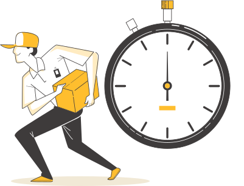

Чому наша доставка
вигідна для вас?
Персональний менеджер-логіст
Вашою послугою займеться компетентний менеджер, який завжди буде на зв'язку
Розробка логістичних схем
Перевезення ва- нтажів "Під Ключ"
Наші фахівці контролюють весь процес доставки вашого вантажу
Ми можемо і вміємо
доставляти швидко
у той самий день
